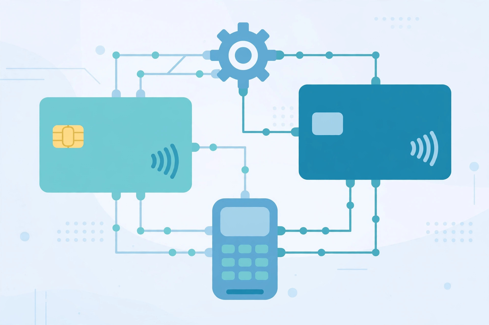

mTLS, API Security and Secure Connectivity

Practitioner About 7:56 Narration: 7:56 Reading time: about 5 min (1,053 words) Status: Not completed yet

By the end of this lesson, you will be able to explain mTLS, API security and secure connectivity. Mutual TLS, known as mTLS, is TLS where both sides prove their identity with certificates. This matters because a compliance failure is not a process error, it is a regulatory breach, a fine, or a frozen payment. The controls in this lesson are what keep the bank out of trouble.
Chapter 79 of 99, Course 8: Architecture, APIs, Hubs and Engineering. Lesson 4 of 8 in this chapter. Position 701 of 874 in the full course. See the full contents.
In this lesson
A read only token that can view balances must never be able to create a payment of 250,000 pounds.
How it flows
- Known as mTLS
Mutual TLS, known as mTLS, is TLS where both sides prove their identity with certificates.
Now playing
Selected point - API client
An API that trusts the client to behave correctly is not secure, it is only hopeful.
Now playing
Selected point - API security tested with real calls, not only documents
A reviewer should test API security with real calls, not only with documents.
Now playing
Selected point - Input validation
Input validation stops injection: every field is checked against its expected type, length, and format before it reaches the business logic.
Now playing
Selected point - Treasury system presenting its client certificate for verification
The treasury system then presents its client certificate, and the bank verifies it, confirming the caller is the registered treasury system and not an attacker.
Now playing
Selected point - No HTTP response receipt at all
The client receives no HTTP response at all, because the connection is refused before HTTP begins.
Now playing
Selected point
Listen to this lesson
Tap play to start the narration, then read along below.
Listening length: 7:56
Not started yet
0:00 / 7:56
| Point | Detail |
|---|---|
| Point 1 | Mutual TLS, known as mTLS, is TLS where both sides prove their |
| Point 2 | API security starts with strong authentication and authorisation for every call |
| Point 3 | APIs also need protection against abuse, replay and injection |
| Point 4 | Secure connectivity also covers the network path between systems |
| Point 5 | A reviewer should test API security with real calls |
Known as mTLS: Mutual TLS, known as mTLS, is TLS where both sides prove their identity with certificates.
mTLS, API Security and Secure Connectivity
What you will learn
Your objective. By the end of this lesson, you will be able to explain mTLS, API security and secure connectivity. Mutual TLS, known as mTLS, is TLS where both sides prove their identity with certificates.
Why it matters. This matters because a compliance failure is not a process error, it is a regulatory breach, a fine, or a frozen payment. The controls in this lesson are what keep the bank out of trouble.
Chapter objective: Learner explains payment security controls, including encryption, authentication, fraud monitoring, and PCI scope, and assesses the security of a payment flow. Learner applies this skill in realistic banking scenarios, with clear examples and correct terminology throughout.
Key learning points
- Known as mTLS
- API client
- API security tested with real calls, not only documents
- Input validation
- Treasury system presenting its client certificate for verification
- No HTTP response receipt at all
Key terms
Authorisation: Approval by the issuer for a card transaction to proceed, confirming the card is valid and funds or credit are available.
Payment hub: A central system in a bank that receives payment instructions from all channels, validates them, applies screening and routing rules, and sends them to the correct clearing system or correspondent.
Idempotency: The property that repeating the same request has the same effect as sending it once. In payments, an idempotency key lets a client safely retry a request after a timeout without creating a duplicate...
Regulatory comparison showing mTLS, API Security and Secure Connectivity.
Practise this lesson
Exercise
Write the request and the expected response for the API call described in this lesson.
Use the API resources, operations and fields named in this lesson.
- What to do. Write the JSON request with the required fields, the success response, and one error response with its error code.
Correct result. A correct request has all mandatory fields, a valid idempotency key, and the right resource and operation. The success response confirms acceptance, and the error response names the field or rule that failed.
Why. An API contract is a promise between two systems. If the request is wrong, the API must reject it cleanly, not fail silently.
Check your understanding
Check your understanding
Answer all 3 questions to see your score. Your result is saved in this browser and shown on your dashboard.
Q1. A corporate treasury system connects to a bank API, and a payment hub connects to a clearing system. What does mTLS prove that one-way TLS does not, and what must happen with an expired certificate?
Q2. Write the request and the expected response for the API call described in this lesson.
Q3. Which statement is the lesson's stated takeaway?
Takeaway and next step
What to remember
A read only token that can view balances must never be able to create a payment of 250,000 pounds.
Call the API described in this lesson with a valid request, then with a missing field, and compare the responses.
Builds on "Encryption in Transit and at Rest, Key Management and HSMs".
Advanced depth
Worked at message level
Worked example. A read only token that can view balances must never be able to create a payment of 250,000 pounds.
When it goes wrong. Input validation must reject unexpected fields, oversized amounts and malformed JSON, and error messages must not reveal internal details such as database names or stack traces that help an attacker. If any of these tests succeeds when it should fail, the API is not ready for production, and the finding must be fixed before real payments flow through it.
Transcript and full text
Show transcript
Mutual TLS, known as mTLS, is TLS where both sides prove their identity with certificates. In ordinary TLS, only the server proves who it is. In mTLS, the client also presents a certificate, and the server checks that certificate before it accepts the connection. A payment hub that connects to a clearing system, or a corporate treasury system that connects to a bank API, should use mTLS so that an attacker cannot pretend to be a trusted partner. If the certificate is expired, revoked or issued by an untrusted authority, the connection must be refused, and the failure must be logged.
API security starts with strong authentication and authorisation for every call. An API that creates a payment must check that the caller is authenticated, that the caller has permission to create payments for that account, and that the payment is within the agreed limit. A read only token that can view balances must never be able to create a payment of 250,000 pounds. Scopes in OAuth2 enforce this separation, and the API must check the scope on every request, not only at login. An API that trusts the client to behave correctly is not secure, it is only hopeful.
APIs also need protection against abuse, replay and injection. Rate limiting stops an attacker from sending thousands of requests in a minute to guess account numbers or to overwhelm the system. A unique idempotency key on each payment request stops a retry from creating a duplicate payment, so that a 40,000 euro payment sent twice with the same key is processed only once. Input validation must reject unexpected fields, oversized amounts and malformed JSON, and error messages must not reveal internal details such as database names or stack traces that help an attacker.
Secure connectivity also covers the network path between systems. Payment APIs should be exposed only through an API gateway that enforces authentication, logging, rate limiting and IP allow listing. Internal payment services should sit in a private network segment, with no direct access from the internet, and with firewall rules that allow only the specific ports and hosts that are needed. A bank that exposes a payment service directly to the internet, without a gateway or network controls, has removed several layers of defence that would otherwise slow an attacker down.
A reviewer should test API security with real calls, not only with documents. The reviewer should try to call the payment API without a token, with an expired token, with a token for a different customer, and with a token that has read only scope. Each attempt must fail with a clear 401 or 403 response and no money movement. The reviewer should also try to replay a payment request, to send a duplicate idempotency key, and to exceed the rate limit. If any of these tests succeeds when it should fail, the API is not ready for production, and the finding must be fixed before real payments flow through it.
API abuse protection is a layered defence, and each layer stops a different attack. Rate limiting stops an attacker from sending thousands of requests in a minute to guess account numbers or to overwhelm the system; a typical limit is 100 requests per minute per client, with a 429 Too Many Requests response when it is exceeded. Idempotency keys stop replay attacks: every POST that creates a payment must carry a unique Idempotency-Key header, and resending the same key returns the original response instead of creating a duplicate payment. Input validation stops injection: every field is checked against its expected type, length, and format before it reaches the business logic.
Secure connectivity also covers the network path between systems, and the API gateway is the control point. Payment APIs should be exposed only through an API gateway that enforces authentication, logging, rate limiting, and IP allow listing. The gateway should reject any request that does not come from an allow-listed IP address, and it should log every request with a timestamp, a client identity, and a payment reference. Direct access to the payment engine, bypassing the gateway, must be blocked at the network level. A business analyst specifying an API integration must define the gateway rules, the allow list, the rate limits, and the logging requirements, because these are the controls that keep the API from being abused.
A worked example shows mTLS in action. A corporate treasury system connects to the bank API to pay 500 suppliers. The connection uses mutual TLS: the bank presents its server certificate, and the treasury system verifies it against its trust store, confirming it is talking to the real bank and not an impostor. The treasury system then presents its client certificate, and the bank verifies it, confirming the caller is the registered treasury system and not an attacker. Only after both certificates are verified does the TLS handshake complete and the API call proceed. The client certificate is issued by the bank, has an expiry date of one year, and is stored in a hardware security module at the client, so it cannot be copied. If the certificate expires, the connection fails and the treasury system cannot send payments until a new certificate is installed. For a business analyst, the requirement is to define the certificate issuance process, the expiry notification, the rotation procedure, and the error returned when a certificate is expired or revoked.
A failure scenario tests certificate handling. A bank revokes a client certificate because the client reports it may have been compromised. The client continues to use the revoked certificate, because its system was not updated. The bank's API gateway checks the certificate revocation list on every connection and rejects the call with a TLS handshake failure. The client receives no HTTP response at all, because the connection is refused before HTTP begins. The client's system must handle this: it must log the TLS failure, alert the operator, and not retry indefinitely, because retrying with a revoked certificate will fail every time. The operator must install the new certificate and verify the connection works. A client that does not monitor its certificate expiry will discover the problem when payments stop, which is the worst time to discover it. Last reviewed 7 November 2026. Further reading: RFC 5246 TLS; bank API developer documentation; SWIFT Customer Security Programme.
Full lesson text (all scenes)
mTLS, API Security and Secure Connectivity
Mutual TLS, known as mTLS, is TLS where both sides prove their identity with certificates. In ordinary TLS, only the server proves who it is. In mTLS, the client also presents a certificate, and the server checks that certificate before it accepts the connection. A payment hub that connects to a clearing system, or a corporate treasury system that connects to a bank API, should use mTLS so that an attacker cannot pretend to be a trusted partner. If the certificate is expired, revoked or issued by an untrusted authority, the connection must be refused, and the failure must be logged.
API security starts with strong authentication and authorisation for every call. An API that creates a payment must check that the caller is authenticated, that the caller has permission to create payments for that account, and that the payment is within the agreed limit. A read only token that can view balances must never be able to create a payment of 250,000 pounds. Scopes in OAuth2 enforce this separation, and the API must check the scope on every request, not only at login. An API that trusts the client to behave correctly is not secure, it is only hopeful.
APIs also need protection against abuse, replay and injection. Rate limiting stops an attacker from sending thousands of requests in a minute to guess account numbers or to overwhelm the system. A unique idempotency key on each payment request stops a retry from creating a duplicate payment, so that a 40,000 euro payment sent twice with the same key is processed only once. Input validation must reject unexpected fields, oversized amounts and malformed JSON, and error messages must not reveal internal details such as database names or stack traces that help an attacker.
Secure connectivity also covers the network path between systems. Payment APIs should be exposed only through an API gateway that enforces authentication, logging, rate limiting and IP allow listing. Internal payment services should sit in a private network segment, with no direct access from the internet, and with firewall rules that allow only the specific ports and hosts that are needed. A bank that exposes a payment service directly to the internet, without a gateway or network controls, has removed several layers of defence that would otherwise slow an attacker down.
A reviewer should test API security with real calls, not only with documents. The reviewer should try to call the payment API without a token, with an expired token, with a token for a different customer, and with a token that has read only scope. Each attempt must fail with a clear 401 or 403 response and no money movement. The reviewer should also try to replay a payment request, to send a duplicate idempotency key, and to exceed the rate limit. If any of these tests succeeds when it should fail, the API is not ready for production, and the finding must be fixed before real payments flow through it.
API abuse protection is a layered defence, and each layer stops a different attack. Rate limiting stops an attacker from sending thousands of requests in a minute to guess account numbers or to overwhelm the system; a typical limit is 100 requests per minute per client, with a 429 Too Many Requests response when it is exceeded. Idempotency keys stop replay attacks: every POST that creates a payment must carry a unique Idempotency-Key header, and resending the same key returns the original response instead of creating a duplicate payment. Input validation stops injection: every field is checked against its expected type, length, and format before it reaches the business logic.
Secure connectivity also covers the network path between systems, and the API gateway is the control point. Payment APIs should be exposed only through an API gateway that enforces authentication, logging, rate limiting, and IP allow listing. The gateway should reject any request that does not come from an allow-listed IP address, and it should log every request with a timestamp, a client identity, and a payment reference. Direct access to the payment engine, bypassing the gateway, must be blocked at the network level. A business analyst specifying an API integration must define the gateway rules, the allow list, the rate limits, and the logging requirements, because these are the controls that keep the API from being abused.
A worked example shows mTLS in action. A corporate treasury system connects to the bank API to pay 500 suppliers. The connection uses mutual TLS: the bank presents its server certificate, and the treasury system verifies it against its trust store, confirming it is talking to the real bank and not an impostor. The treasury system then presents its client certificate, and the bank verifies it, confirming the caller is the registered treasury system and not an attacker. Only after both certificates are verified does the TLS handshake complete and the API call proceed. The client certificate is issued by the bank, has an expiry date of one year, and is stored in a hardware security module at the client, so it cannot be copied. If the certificate expires, the connection fails and the treasury system cannot send payments until a new certificate is installed. For a business analyst, the requirement is to define the certificate issuance process, the expiry notification, the rotation procedure, and the error returned when a certificate is expired or revoked.
A failure scenario tests certificate handling. A bank revokes a client certificate because the client reports it may have been compromised. The client continues to use the revoked certificate, because its system was not updated. The bank's API gateway checks the certificate revocation list on every connection and rejects the call with a TLS handshake failure. The client receives no HTTP response at all, because the connection is refused before HTTP begins. The client's system must handle this: it must log the TLS failure, alert the operator, and not retry indefinitely, because retrying with a revoked certificate will fail every time. The operator must install the new certificate and verify the connection works. A client that does not monitor its certificate expiry will discover the problem when payments stop, which is the worst time to discover it. Last reviewed 7 November 2026. Further reading: RFC 5246 TLS; bank API developer documentation; SWIFT Customer Security Programme.
Completing a lesson updates your progress dashboard on the homepage.
Scene timestamps are estimated by allocating the narration text proportionally across the real audio length. The audio playback position is the source of truth: pause freezes the visual, seeking restores the correct scene, replay restarts the scene animation.
Real-World Example
A payment hub that connects to a clearing system, or a corporate treasury system that connects to a bank API, should use mTLS so that an attacker cannot pretend to be a trusted partner. A read only token that can view balances must never be able to create a payment of 250,000 pounds.
Sources
The official rules and standards this lesson is based on. Check them to verify the detail.
More in this chapter
 The Threat Model for Payment Systems ›
The Threat Model for Payment Systems ›
 Customer authentication: passwords, MFA and strong customer authentication ›
Customer authentication: passwords, MFA and strong customer authentication ›
 Encryption in Transit and at Rest, Key Management and HSMs ›
Encryption in Transit and at Rest, Key Management and HSMs ›
 SWIFT Customer Security Programme and Network Security ›
SWIFT Customer Security Programme and Network Security ›
 Fraud Controls, Monitoring and Incident Response ›
Fraud Controls, Monitoring and Incident Response ›
Exercise: Security Review of a Payment API ›
 System authentication: OAuth2 grants, scopes, token lifetimes and certificate rotation ›
System authentication: OAuth2 grants, scopes, token lifetimes and certificate rotation ›